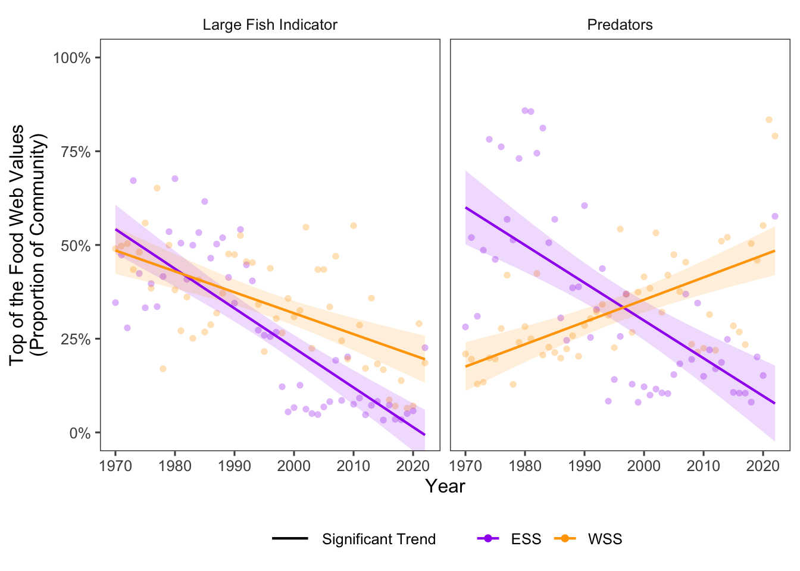

12 Community Structure (Top of the Food Web)
Data Type: Tabular Data (within eco_indicators)
Spatial Scope: Maritimes
Duration 1970-2022
Source: Bundy et al. 2017
12.1 Introduction to Indicator
The eco_indicators dataset provides indicators of ecosystem structure with focus on the top of the food web (Bundy, Gomez, and Cook 2017).
- Large Fish Indicator: Proportion of large fish (>35cm) in the community.
- Proportion of Predators: Proportion of predatory fish (feeding on fish or non-planktonic invertebrates).
These indicators provide data on how the marine community is structured, and have relevance to top-down controls on the ecosystem.
12.2 View Data
library(tidyr)
library(plotly)
library(stringr)
plotly_df <- data@data %>% inner_join(global_cols3)
# function to create plot with dropdown menu ------------------------------
make_topfoodweb_dropdown_plot <- function(df,
year_col = "year",
region_col = "region",
value_suffix = "_value") {
# convert to long format
long <- df %>%
janitor::clean_names() %>%
pivot_longer(
cols = ends_with(value_suffix),
names_to = "metric",
values_to = "value"
) %>%
# remove suffix
mutate(
metric = str_remove(metric, "_value")
) %>%
# drop NAs (some regions don't have data for some variables or years)
tidyr::drop_na(value)
# find all metrics and regions
metrics <- unique(long$metric)
regions <- unique(long[[region_col]])
# assign regions to consistent colors
# region_colors <- setNames(hcl.colors(length(regions), palette = "Dark 3"), regions)
# clean names for dropdown panels, helper
pretty_label <- function(x) str_to_title(gsub("_", " ", x))
# build plot -----------------
p <- plot_ly()
# Add bar traces: metric1 has region1..K, metric2 has region1..K, ...
for (metric_i in seq_along(metrics)) {
m <- metrics[metric_i]
for (region_i in regions) {
dat <- long %>%
filter(metric == m, .data[[region_col]] == region_i) %>%
group_by(.data[[year_col]],color, linetype, linewidth, region_group, region_group_label) %>% # in case you have multiple rows per year
summarise(value = sum(value), .groups = "drop") %>%
arrange(.data[[year_col]])
group_name <- unique(dat$region_group)
color <- unique(dat$color)
linetype <- unique(dat$linetype)
width <- unique(dat$linewidth)
# If a region truly has no data for that metric, add an empty trace
# (keeps trace indexing stable)
if (nrow(dat) == 0) {
dat <- tibble::tibble(!!year_col := integer(0), value = numeric(0))
}
p <- p %>% add_lines(
data = dat,
x = ~.data[[year_col]],
y = ~value,
name = as.character(region_i),
legendgroup = group_name,
legendgrouptitle = list(
text =
ifelse(region_i == "4VN" & group_name == "ESS",
"Eastern Scotian Shelf Zones",
ifelse(region_i == "4X",
"Western Scotian Shelf Zones",
NA))),
showlegend = (metric_i == 1),
visible = (metric_i == 1),
line = list(color = color, dash = linetype),
hovertemplate = paste0("<b>", region_i,":</b> ","%{y:.3f}<extra></extra>") )
}
}
n_regions <- length(regions)
n_traces <- length(metrics) * n_regions
buttons <- lapply(seq_along(metrics), function(metric_i) {
vis <- rep(FALSE, n_traces)
shl <- rep(FALSE, n_traces)
idx_start <- (metric_i - 1) * n_regions + 1
idx_end <- metric_i * n_regions
vis[idx_start:idx_end] <- TRUE
shl[idx_start:idx_end] <- TRUE
list(
method = "update",
args = list(
list(visible = vis, showlegend = shl),
list(
title = pretty_label(metrics[metric_i]),
yaxis = list(title = pretty_label(metrics[metric_i]))
)
),
label = pretty_label(metrics[metric_i])
)
})
p %>%
layout(
barmode = "stack",
hovermode = "x unified",
title = pretty_label(metrics[1]),
xaxis = list(title = str_to_title(year_col)), # keep one bar per year
yaxis = list(title = metrics[1], fixedrange = TRUE),
legend = list(
title = list(text = str_to_title(region_col)),
x = 1.02, xanchor = "left",
y = 1, yanchor = "top",
groupclick = "toggleitem"
),
updatemenus = list(list(
type = "dropdown",
x = -.1, xanchor = "left",
y = 1.15, yanchor = "top",
buttons = buttons
)),
margin = list(r = 180, t = 80)
)
}
# usage:
p <- make_topfoodweb_dropdown_plot(plotly_df)
p <- p %>% config(displayModeBar= F)
pFigure 12.1: topfoodweb Indicators in all NAFO regions and Scotian Shelf regions overall. Use dropdown menu to select indicator, and click legend to isolate regions.
12.3 Trends
Top of the food web variables are changing across the Scotian Shelf region with noisy trends through time (Fig. 12.1).
The proportion of top of the food web species is decreasing in the Eastern Scotian Shelf with 2 variables showing negative trends through time (2 significant). In the Western Scotian Shelf, the proportion of large fish has decreased significantly through time, but the proportion of predators has increased (Fig. 12.2).

Figure 12.2: Top of the Food Web trends for ESS and WSS
12.3.1 Summary Table by NAFO Region and topfoodweb Variable
Trends of each topfoodweb variable for each NAFO region within the Eastern and Western Scotian Shelf are shown below (Table 12.1).
| variable | Eastern Scotian Shelf Trends | Western Scotian Shelf Trends |
|---|---|---|
| Large Fish Indicator Value |
4VN: -1.40e-02 ∗ 4VS: -9.86e-03 ∗ 4W: -8.70e-03 ∗ |
4X: -5.58e-03 ∗ |
| Predators |
4VN: -7.68e-03 ∗ 4VS: -1.38e-02 ∗ 4W: -9.61e-03 ∗ |
4X: 5.94e-03 ∗ |
12.5 Additional Data
topfoodweb Variables (within eco_indicators) contains data for 4VN, 4VS, 4W, 4X, ESS, and WSS. All are shown on this page, but note that NAFO zones are nested within Scotian Shelf regions.